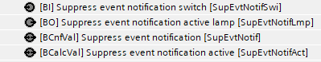
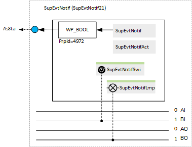
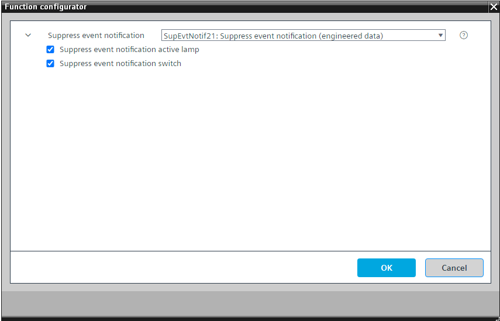
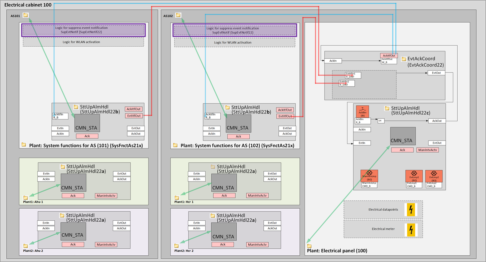

[SupEvtNotif21] 禁止事件通知
Program block, name / node subtype: [SupEvtNotif21] Suppress event notification
Library hierarchy: Universal equipment
Family: SupEvtNotif
项目树 | 图表 |
|---|---|
|
 |  |
Configurator


程序块存储在没有 I/Os. 的库中 使用auto-create and auto-connect函数创建 I/Os 和 /or 将它们连接到接口块，例如 R_A、CMD_B。或者，从包含库中预定义 I/Os 的文件夹中取出 I/Os，并从工厂中取出 /or，并将它们连接到接口块。
该程序块代表版本 < 1.5 的设备的标准。对于版本 >= 1.5 的设备，请使用 SttUpAlmHdl22 及其子集。
抑制结构化视图中所有对象（例如自动化站）的事件通知。
当通过配置值或可选开关激活时，逻辑会写入自动化站“基础设施”中对象 AsSta 的属性 4972。
该程序块是 SysFnctAS21x 中 SupEvtNotif22 的替代程序块。
未抑制的值对象会生成事件通知抑制处于活动状态的警报。
该程序块具有以下可选功能：
Option: Suppress event notification active lamp (1xBO)
命令二进制输出打开电柜前部的灯。
Option: Suppress event notification switch (1xBI)
从开关读取信号并激活事件通知抑制。
SupEvtNotif21 as part of an example of an electrical cabinet

SupEvtNotif21 is an alternative to SupEvtNotif22
姓名 | 描述 | 类型 | 报警/通知类 | 趋势/类型 | |
|---|---|---|---|---|---|
SupEvtNotif | Suppress event notification | BCnfVal: Binary configuration value
| No | No | |
SupEvtNotifAct | Suppress event notification active | BCalcVal: Binary calculated value
| 是的，8 | No | |
姓名 | 描述 | 类型 | 报警/通知类 | 趋势/类型 | |
|---|---|---|---|---|---|
SupEvtNotifSwi | Suppress event notification switch | BI：二进制输入 | No | No | |
SupEvtNotifLmp | Suppress event notification active lamp | BO：二进制输出 | No | 是的，4 | |